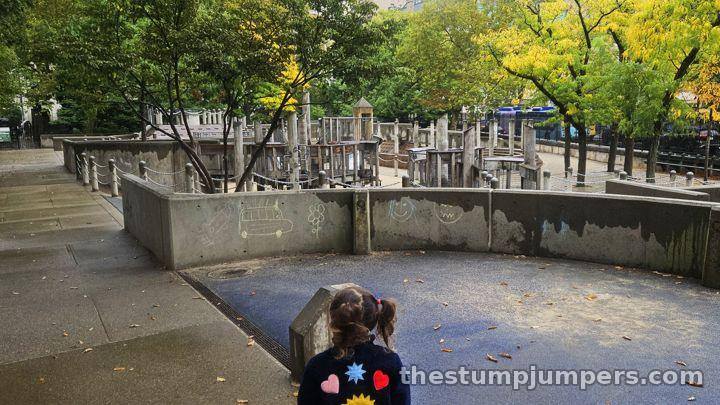
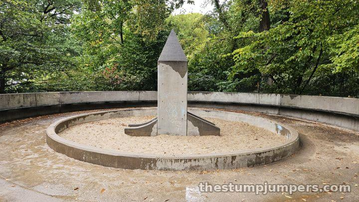
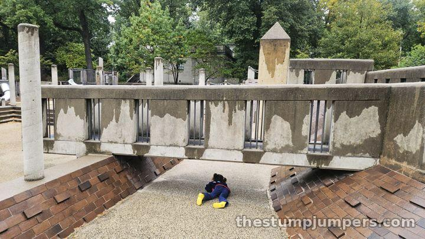
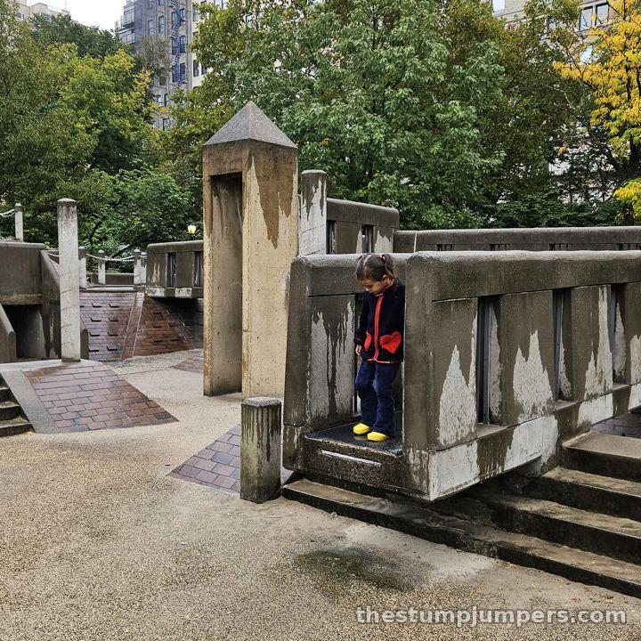
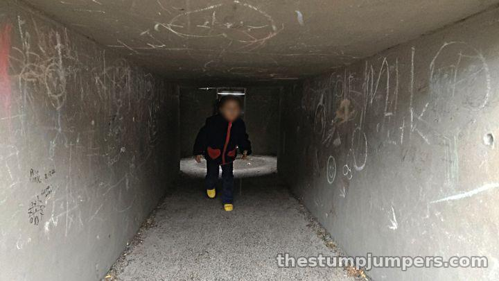
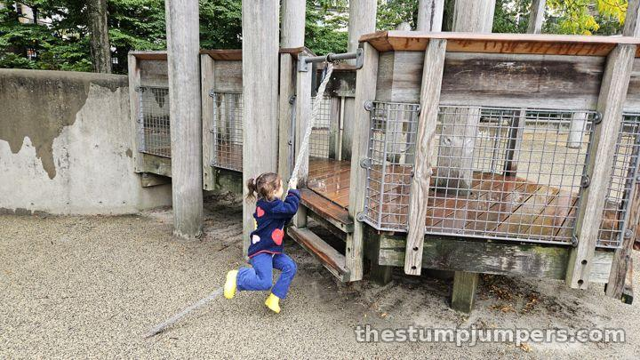
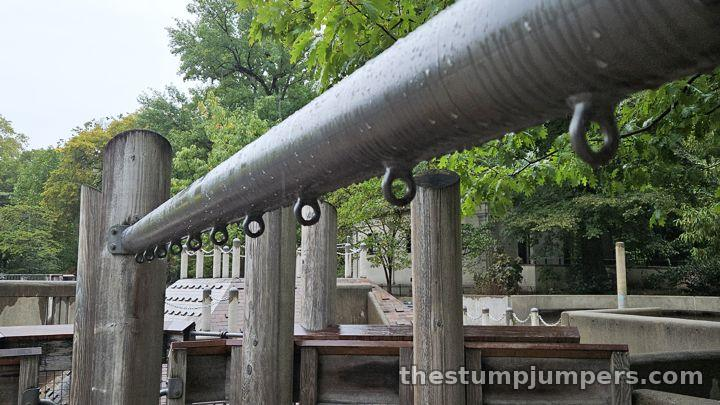
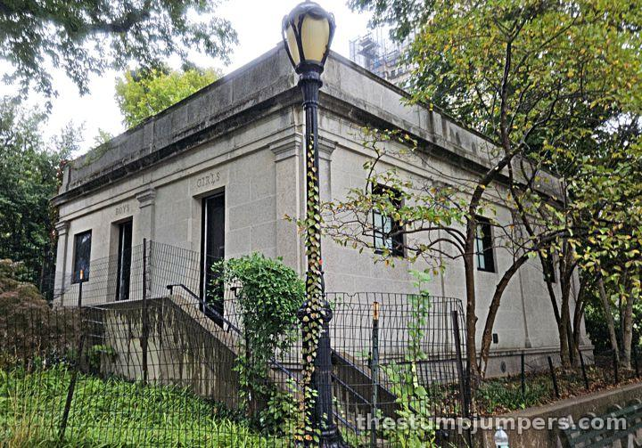

Ancient Playground: The Best Game of Tag in the City


Ancient Playground has an awkward address. It sits in the traffic triangle where the 86th Street Transverse meets Fifth Avenue, right beside the Met. You can see traffic on every side and hear the horns while you play. You also can't get in from the park; you need to walk in from Fifth Avenue after playing some pretty hairy Frogger.

The name oversells it. “Ancient” makes you picture pyramids and temples. What you get is a lot of concrete and brick in a drab, brutalist style, plus two concrete obelisks that are apparently meant to go with that other obelisk in the park, the one Egypt didn't exactly hand over. The theming just feels a little phoned in. The toddler area is a sandpit with an awkward concrete slide thing under one of the obelisks. I do like that there's basically no plastic, apart from two tire swings.

But here's the thing: this is the best playground in the city for playing tag. I've been pulled into games with the bigger kids more than once, and I can bound onto and over the pyramids, but I get destroyed in the tunnels. The park is full of little structures that kids climb or run up, then slide or jump down the other side, and some of them have secret tunnels. Heckscher and Adventure Playground have similar structures, but these are exactly the right size for tag: regular, freeze, or the-ground-is-lava.


It's also great for climbers. My daughter named the saggy climbing rope the “bonky rope,” because kids flop around on it and bonk their heads. Overall this playground has held up fairly well, which is the upside of building with concrete, brick, and stainless steel. The trapeze rings have gone missing, and the rubber floor has a lot of patches.


It's usually clean, and it has its own private bathroom with separate Boys and Girls entrances inside the playground. IRL it's not nearly as haunted-looking as in this picture.

Verdict: worth a stop if you're going to the Met (which has a kids' playroom I'll review soon!) or if your kid loves to climb. Otherwise it isn't really worth a special trip. It's great for tag and just okay for everything else.
The Stump Report
Stump average: 3.4 out of 5. Ranked #9 of 27 NYC playgrounds we've reviewed, and #2 of 10 in Central Park.
Biking & Running There
On the run: that's how we came, with the running stroller. Hop off the Central Park loop on the east side near the Met, then walk around to the Fifth Ave. entrance, since there's no way in from inside the park. By bike: the loop drive gets you close; same deal, walk around to Fifth Ave. By train: 4, 5, or 6 to 86 St, then walk three blocks west to Fifth Ave.
More to Do Nearby
- Toll Family Playground about 0.4 mi away · 2.8
- Swedish Cottage Marionette Theatre about 0.4 mi away · 3.5
- Margaret L. Kempner Playground about 0.4 mi away · 2.6